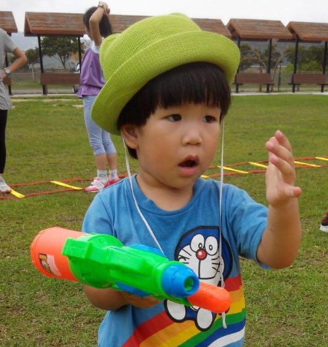
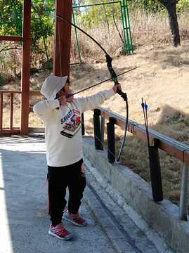

He was very healthy in his pre-school years. After 3 years old, he was sent to a nearby kindergarten ran by a charity group. He was very popular there as many kids called him by his nice nickname, ChingChing, the double sounds of his last given name. He always had fun with them.
pre-school
Ezra enhanced his self-care ability a lot, like tidying his bed after nap every afternoon during this period of time. On the other hand, he became more proactive in the class. This trait of proactiveness has been following him to his current primary school life.
